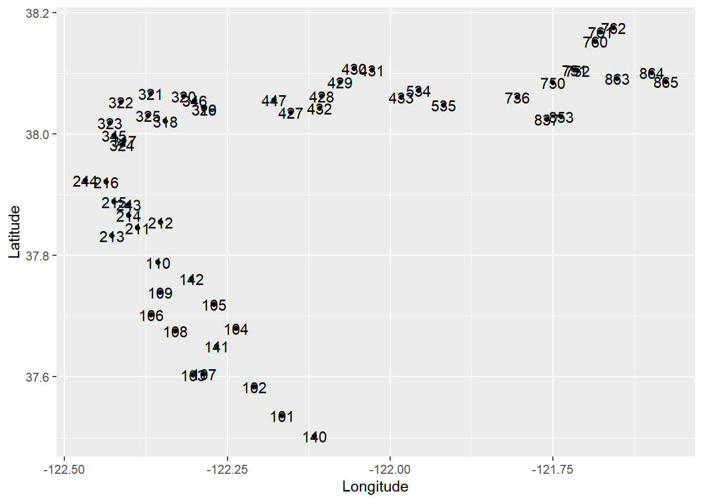

Chapter 13 Multivariate Stats
13.1 Load data
Get fish data from LTMRdata
# install.packages("devtools")
# devtools::install_github("sbashevkin/LTMRdata")
library(LTMRdata)
str(Baystudy)## tibble [764,592 x 23] (S3: tbl_df/tbl/data.frame)
## $ Source : chr [1:764592] "Bay Study" "Bay Study" "Bay Study" "Bay Study" ...
## $ Station : chr [1:764592] "101" "101" "101" "101" ...
## $ Latitude : num [1:764592] 37.5 37.5 37.5 37.5 37.5 ...
## $ Longitude : num [1:764592] -122 -122 -122 -122 -122 ...
## $ Date : POSIXct[1:764592], format: "1980-01-23" "1980-01-23" ...
## $ Datetime : POSIXct[1:764592], format: "1980-01-23 07:49:00" "1980-01-23 07:49:00" ...
## $ Survey : int [1:764592] 1 1 1 1 1 1 1 1 1 1 ...
## $ Depth : num [1:764592] 12.2 12.2 12.2 12.2 12.2 12.2 12.2 12.2 12.2 12.2 ...
## $ SampleID : chr [1:764592] "Bay Study 1" "Bay Study 1" "Bay Study 1" "Bay Study 1" ...
## $ Method : chr [1:764592] "Midwater trawl" "Midwater trawl" "Midwater trawl" "Midwater trawl" ...
## $ Tide : chr [1:764592] NA NA NA NA ...
## $ Sal_surf : num [1:764592] 20.5 20.5 20.5 20.5 20.5 ...
## $ Temp_surf : num [1:764592] 11.5 11.5 11.5 11.5 11.5 11.5 11.5 11.5 11.5 11.5 ...
## $ Secchi : num [1:764592] 86 86 86 86 86 86 86 86 86 86 ...
## $ Tow_duration : num [1:764592] NA NA NA NA NA NA NA NA NA NA ...
## $ Tow_area : num [1:764592] NA NA NA NA NA NA NA NA NA NA ...
## $ Tow_volume : num [1:764592] 5603 5603 5603 5603 5603 ...
## $ Tow_direction : chr [1:764592] NA NA NA NA ...
## $ Taxa : chr [1:764592] "Atherinops affinis" "Atherinopsis californiensis" "Clupea pallasii" "Clupea pallasii" ...
## $ Length : num [1:764592] 95 271 78 80 81 82 85 90 37 50 ...
## $ Count : num [1:764592] 1 1 2 2 1 1 1 2 1 1 ...
## $ Length_NA_flag: chr [1:764592] NA NA NA NA ...
## $ Notes_tow : chr [1:764592] NA NA NA NA ...unique(Baystudy$Station)## [1] "101" "102" "103" "104" "105" "106" "107" "108" "109" "110" "211" "212"
## [13] "213" "214" "215" "216" "317" "318" "319" "320" "321" "322" "323" "324"
## [25] "325" "326" "427" "428" "429" "430" "431" "432" "433" "534" "535" "736"
## [37] "837" "140" "141" "142" "243" "244" "345" "346" "447" "750" "751" "752"
## [49] "853" "760" "761" "762" "863" "864" "865" "753"baystudy_latlon <- Baystudy %>% select(Latitude, Longitude, Station) %>%
distinct()
ggplot(baystudy_latlon, aes(x = Longitude, y = Latitude, label = Station)) + geom_point() + geom_text()
baystudy_subset <- Baystudy %>%
filter(Station %in% c(101, 320, 428, 805),
year(Date) > 2014,
Method == "Otter trawl",
!is.na(Count)) %>%
mutate(CPUE = Count/Tow_area,
Month = as.numeric(month(Date)),
WY = wateRshedTools::wtr_yr(Date),
Season = case_when(Month >=1 & Month<=3 ~ "Winter",
Month>3 & Month<=6 ~ "Spring",
Month > 6 & Month <=9 ~ "Summer",
TRUE ~ "Fall")) %>%
left_join(WYType %>% select(WYType_Sac, WY)) %>%
select(-Length) %>%
arrange(Taxa) %>%
distinct()13.2 PCA
13.3 Cluster analysis
13.4 NMDS
Fill zeros
baystudy_wide <- pivot_wider(baystudy_subset, names_from = "Taxa", values_from = CPUE, values_fill = 0)
baystudy_long <- pivot_longer(baystudy_wide, cols = `Acanthogobius flavimanus`:`Tridentiger trigonocephalus`, values_to = "CPUE", names_to = "Taxa")Remove rare species
numSamples = nrow(baystudy_wide)
prop <- baystudy_long %>%
filter(CPUE>0) %>%
group_by(Taxa) %>%
summarize(n = n(),
percent = round(n/numSamples*100,2))
fish_abund <- prop %>%
filter(percent>5)
baystudy_nmds <- filter(baystudy_long, Taxa %in% fish_abund$Taxa)
fish1 <- first(fish_abund$Taxa)
fishlast <- last(fish_abund$Taxa)Make species matrix
spMatrixAll <- baystudy_nmds %>%
pivot_wider(names_from = "Taxa", values_from = CPUE, values_fill = 0) %>%
dplyr::select(Station, Season, WYClass = WYType_Sac, Month, Date, fish1:fishlast)
# Remove any row where there is no catch for the day.
spMatrix <- spMatrixAll %>% mutate(Total = dplyr::select(., fish1:fishlast) %>% rowSums(na.rm = TRUE)) %>%
filter(Total !=0)Run NMDS
# ncolbelow <- ncol(spMatrix)-1
# library(vegan)
# nmds <- metaMDS(spMatrix[,6:ncolbelow], distance="bray", k=3, trymax=400, autotransform = FALSE)
# nmds
#
# stressplot(nmds)